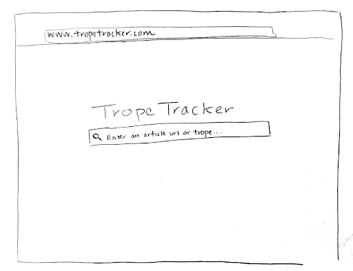
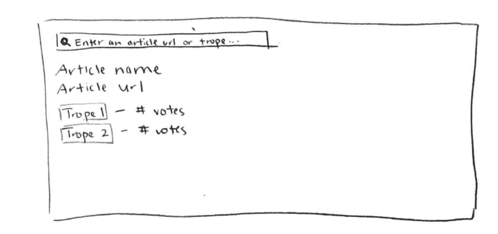
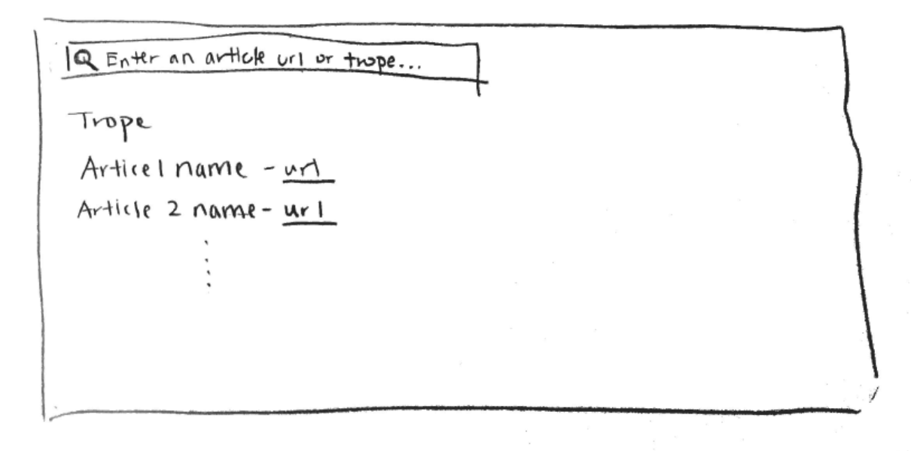
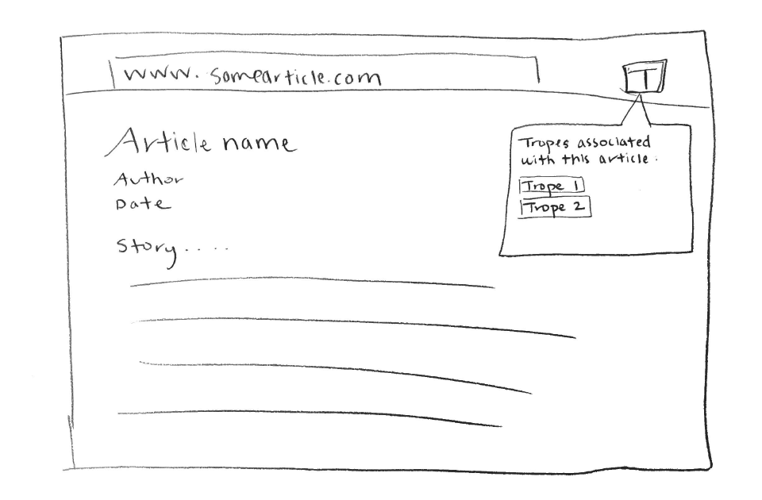
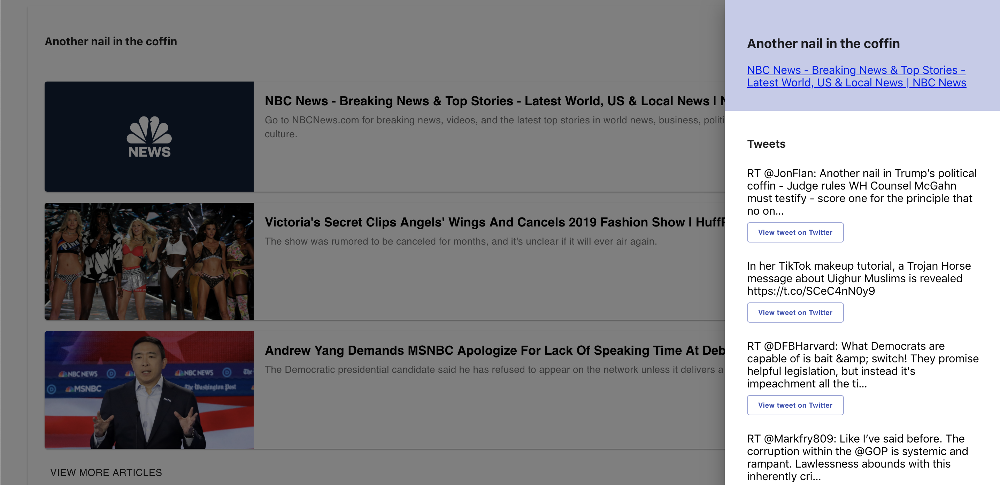
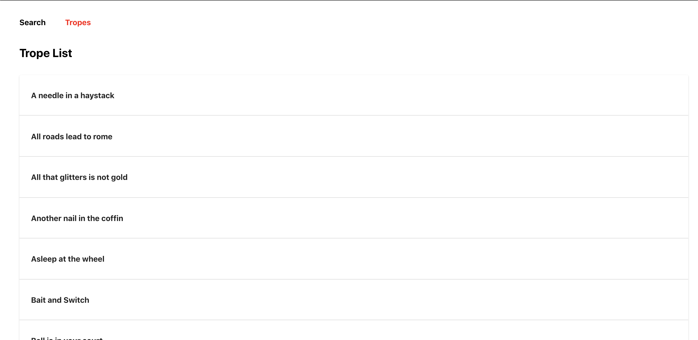
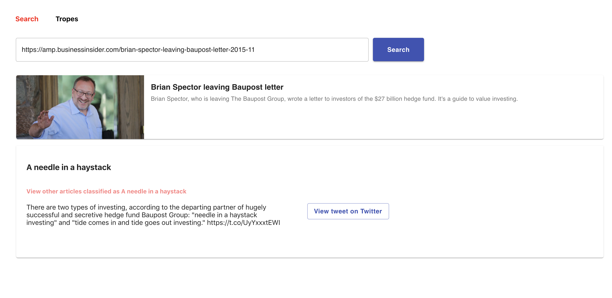
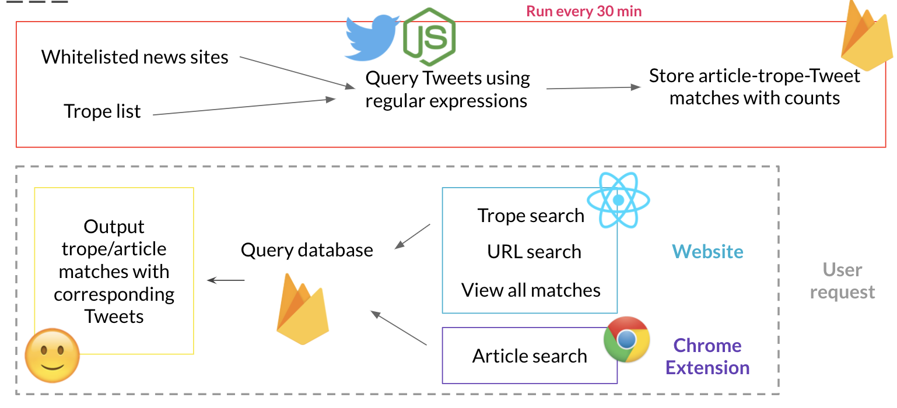

Practicum in Intelligent Information Systems is a class offered at Northwestern that focuses on areas of information access, management, capture, or retrieval. Within these focus-areas, students are expected to present a project definition, a technology selection, data collection, implementation, and project management.
Project Overview
Winter 2019
Team Members:
Trope Tracker is a tool that discovers trope-article association via crowdsourced Twitter data. A trope is figurative or metaphorical use of a word or expression. Some common tropes are “a needle in a haystack”, or “David vs. Goliath”. Our goal is to identify tropes or trope ideas in articles and vice versa; to find articles by looking up tropes. The idea behind Trope Tracker is to see how people are using tropes and how common they are today.
Example Use Cases
1. User wants to know what a story is about before reading it, e.g. news story about an individual winning a lawsuit against Facebook summarizes as David vs. Goliath
2. User wants to view stories classified as the same trope, e.g. English teachers design a literary analysis exercise for students to compare and contrast stories labeled as the same trope (characters, plot, etc.)
My Role
As a four person team with much ground to cover, my role was quite dynamic. During this project, my tasks ranged from connecting to our database, research, frontend, and creating a complimentary chrome extension. However, due to time constraints, we were unable to fully publish he chrome extension
Design Process
Designing for this project was an interesting challenge because we needed to find an intuitive way to provide two different search methods. In the first method, we wanted to allow users to provide a link to an article and then Trope Tracker would display the tropes used in the article. The second method is more of a browsing method where tropes are provided and users can search for a trope in our list and browse through the tweets that contain articles with those tropes. Our first UI sketches explored these ideas:
Home Screen
Article Search
Trope Search
Chrome Extension
One challenge that we faced in terms of UI was displaying both the articles and the tweets associated with them on the same page. Our initial idea was to place them under the article name, but that caused friction as users would have to scroll a lot to reach the next article. We settled on creating a hamburger-menu styled pop-out that would display the tweets.
This allowed users to easily view the tweets on the side without having to move around the page too much.
For the rest of our design, we stuck to a simple and minimalistic design, highlighting only the most necessary pieces of information.
 Our tech stack for this project included: ReactJS (frontend), NodeJS/Python (backend), Firebase (database), Twitter API ($$$), Newsbot (Chrome extension)
Technical Architecture
